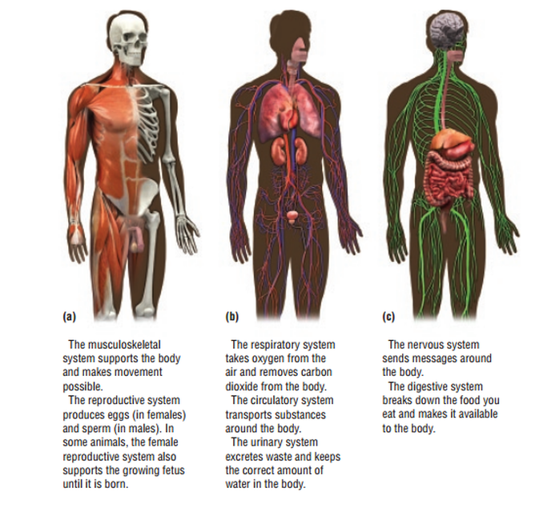

The human body is the structure of a human being. It is composed of many different types of cells that together create tissues and subsequently organ systems. They ensure homeostasis and the viability of the human body. It comprises a head, neck, trunk (which includes the thorax and abdomen), arms and hands, legs and feet. The study of the human body involves anatomy, physiology, histology and embryology. The body varies anatomically in known ways. Physiology focuses on the systems and organs of the human body and their functions. Many systems and mechanisms interact in order to maintain homeostasis, with safe levels of substances such as sugar and oxygen in the blood. The body is studied by health professionals, physiologists, anatomists, and by artists to assist them in their work.
Here is a Picture of a Human Body
